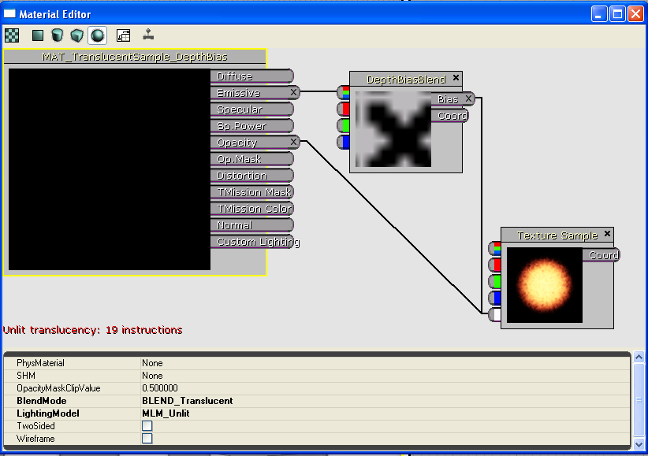

UDN
Search public documentation:
DepthBiasBlendUsageJP
English Translation
中国翻译
한국어
Interested in the Unreal Engine?
Visit the Unreal Technology site.
Looking for jobs and company info?
Check out the Epic games site.
Questions about support via UDN?
Contact the UDN Staff
中国翻译
한국어
Interested in the Unreal Engine?
Visit the Unreal Technology site.
Looking for jobs and company info?
Check out the Epic games site.
Questions about support via UDN?
Contact the UDN Staff
Depth Bias Blendマテリアル表現式
ドキュメントの概要: DepthBiasBlendマテリアル表現式の説明。 ドキュメントの変更ログ: Scott Sherman により作成。概要
DepthBiasedBlend マテリアル表現式によって、レンダリングされるソース オブジェクトとバイアス値に基づく宛先バッファーのコンテンツとの間のブレンドを行う能力が提供されます。最終の色の決定の背後にある数値計算は次の通りです。:
if (DestinationDepth < SourceDepth)
{
FinalColor = DestinationColor; // ソースピクセルを描画しない
}
else
if (SourceDepth < (DestinationDepth - ((1 - Bias) * BiasScale)))
{
FinalColor = SourceColor; // ソースピクセルを描画する
}
else
{
FinalColor = LinearInterpolation(DestinationColor, SourceColor,
((DestinationDepth - Source Depth) / ((1 - Bias) * BiasScale)));
}
このタイプのブレンドの最も明らかな用法は、スプライト パーティクルがジオメトリを交差するときに生じる粗いエッジを除去することです。これを使用して DepthBiasBlend 表現式のための実例による説明をします。
例
この例では、簡単なパーティクル スプライト エミッタを使用して、この新しいマテリアル表現式の利点を実証します。パーティクル システムについては、次のページで取り上げます。: https://udn.epicgames.com/Three/ParticleTopicsソース イメージとエミッタ
エミッタは、4.5 秒の存続時間で 5 秒ごとにシングルパーティクルをバーストさせます。エミッタのアクタは、パーティクルがレベルの「フロア」を通って生じるように、レベルに配置されています。パーティクルは、次のテクスチャを利用します。: 図 １：使用されるソース テクスチャです。
（イメージのアルファが右側です。）
図 １：使用されるソース テクスチャです。
（イメージのアルファが右側です。）
問題例
パーティクル スプライトに適用される簡単なマテリアルは、次の通りです。: 図 2: 「標準」スプライト マテリアル*
このマテリアルがカスケード ビューポイントで適用されて、パーティクル システムは良好に見えます。しかし、エミッタが配置されているときは、問題があります。レベルのジオメトリが貫通されているときはいつでも、パーティクルによって粗いエッジが生成します。結果は以下の通りです。:
図 2: 「標準」スプライト マテリアル*
このマテリアルがカスケード ビューポイントで適用されて、パーティクル システムは良好に見えます。しかし、エミッタが配置されているときは、問題があります。レベルのジオメトリが貫通されているときはいつでも、パーティクルによって粗いエッジが生成します。結果は以下の通りです。:
 図 3：標準パーティクル/ジオメトリ交差 ー ショット 1
図 3：標準パーティクル/ジオメトリ交差 ー ショット 1
 図 4: 標準パーティクル/ジオメトリ交差 ー ショット 2
図 4: 標準パーティクル/ジオメトリ交差 ー ショット 2
 図 5: 標準パーティクル/ジオメトリ交差 ー ショット 3
スプライトがレベルのジオメトリを貫通しているときに、粗いエッジが現れることに注意してください。
図 5: 標準パーティクル/ジオメトリ交差 ー ショット 3
スプライトがレベルのジオメトリを貫通しているときに、粗いエッジが現れることに注意してください。
新しい方法
パーティクル スプライトに適用できる新しいマテリアルでは、DepthBiasBlend 表現式を利用します。以下の通りです。:
図 6 : DepthBiasBlend ベースのマテリアル DepthBiasBlend は、TextureSample 表現式から生じます。したがって、ソース テクスチャは、汎用ブラウザでテクスチャを選択し、表現式を右クリックし、"Use Current Texture"(カレントのテクスチャを使う) を選択することによって簡単にセットされます。 座標入力 は、標準テクスチャ座標オプションです。パーティクルの場合は、これを「空白」のままにし、最初の UV セットが利用されるようにする必要があります。 バイアス入力によって、ソース ピクセル バイアスが提供されます。- オブジェクトが貫通するときに「ブレンド」トランジションが生じるのを考慮に入れるために、この値が上の方程式に代入されます。どのような表現式の組合せでも、結果として単一の浮動小数点値になる可能性があります。この場合、ソース イメージのアルファ チャンネルが使用されます。つまり、各ピクセルで、ソース テクスチャが、サンプルされたアルファ値を持ち、それがバイアスとして利用されることを意味します。 DepthBiasBlend 表現式の BiasScale パラメータには、より精度の高いコントロールを効果に与えるために、バイアスのスケーリングが考慮されます。この場合、バイアス スケールは、比較的高く (200.0) にセットされ、より明確に効果が実証されます。 テクスチャが不透明でも、マテリアルのBlendMode は半透明である必要があります。（注意： これは将来変更されるかも知れません。本書を書いている時点でのことです。） これは、マテリアルを使用するオブジェクトが、宛先バッファーがブレンドする値を持つ場所で、一度にレンダリングされることを保証するためのものです。不透明なテクスチャをブレンドしたい場合は、BlendMode を Translucent にセットし、1.0 の一定表現式を不透明チャンネルに入れます。 [重要な注意点： 現在、この表現式は、サムネイル レンダリングやプレビュー ウィンドウには表示されません。これは、クリアが一瞬に発生する方法によります。これは、既知の問題で、データベースにあります。] 新しいマテリアルは、次の結果を持つエミッタに適用されます。: 図 7: 新しいパーティクル/ジオメトリ交差 - ショット 1
図 7: 新しいパーティクル/ジオメトリ交差 - ショット 1
 図 8：新しいパーティクル/ジオメトリ交差 - ショット ２*
図 8：新しいパーティクル/ジオメトリ交差 - ショット ２*
 図 8: 新しいパーティクル/ジオメトリ交差 - ショット 3*
以下のスクリーン ショットには、エミッタの 2 つのバージョンの比較が並べて示されています。:
図 8: 新しいパーティクル/ジオメトリ交差 - ショット 3*
以下のスクリーン ショットには、エミッタの 2 つのバージョンの比較が並べて示されています。:
 図 9: 並べた比較
図 9: 並べた比較
使用法の注意:
- DepthBiasBlend 用のマテリアル表現式は楽には手に入りません。現在、15の追加のインストラクションが必要です。これを利用するマテリアルを作成するときは、このことを必ず考慮に入れておいてください。重要な更新:
DepthBiasedBlend モジュールは、DepthBiasedBlend モジュールの上に使用する必要があります（このモジュールは、将来エンジンから取り除かれます）。新しい表現式の利点は、もはや TextureSample 表現式から生じないということです。RGB およびアルファ値が表現式の入力です。このことにより、様々なサンプル表現式（FlipBook, Movie, ParticleSubUV など）のために、Depth Blend 表現式を特別に実行する必要がなくなります。 アルファ入力は、アルファ出力まで通り抜けます。アルファ入力表現式がないときは、 1.0f の値が出力されます。バイアス値は、空白の入力表現式に対して 1.0f です。このことは、テクスチャが不透明な場合に役立ちます。以下の図に、新しい表現式とともに実行される不透明なマテリアルが示されています。: 図 10：不透明なDepthBiasedBlend マテリアル
上から取った半透明なマテリアル例は、下の新しい表現式とともに実行されます。:
図 10：不透明なDepthBiasedBlend マテリアル
上から取った半透明なマテリアル例は、下の新しい表現式とともに実行されます。:
 図 11：半透明なDepthBiasedBlend マテリアル
図 11：半透明なDepthBiasedBlend マテリアル